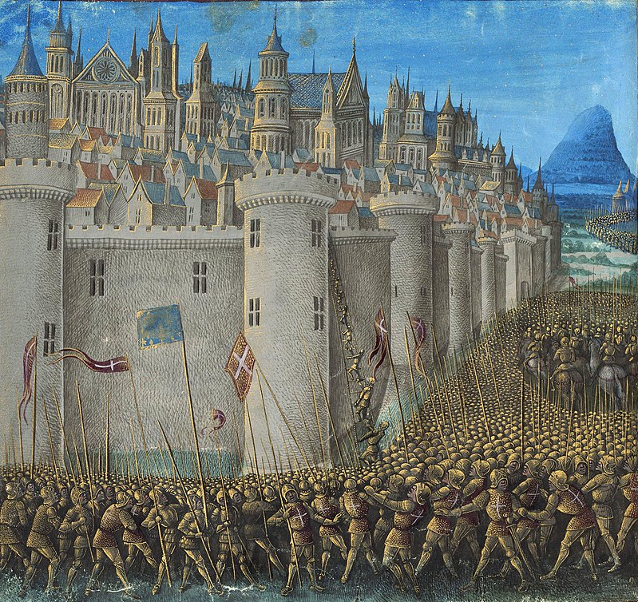
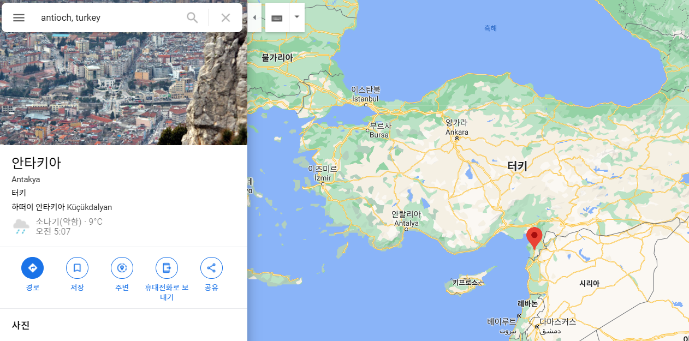
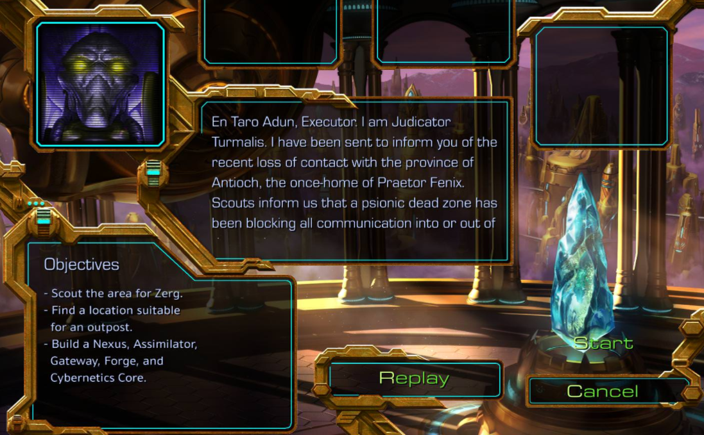
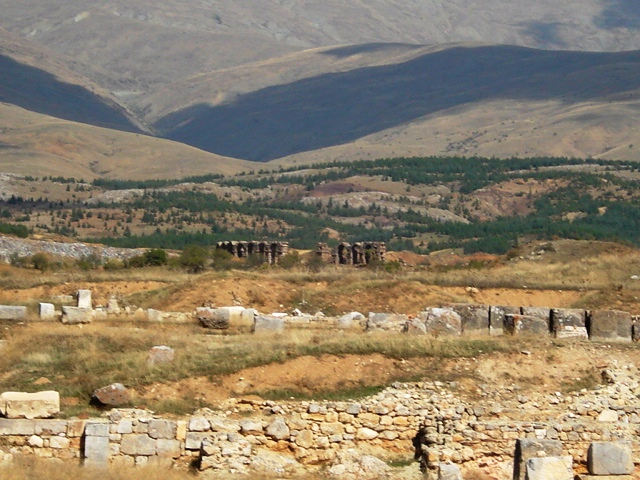
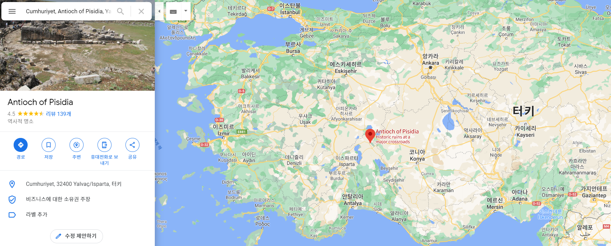
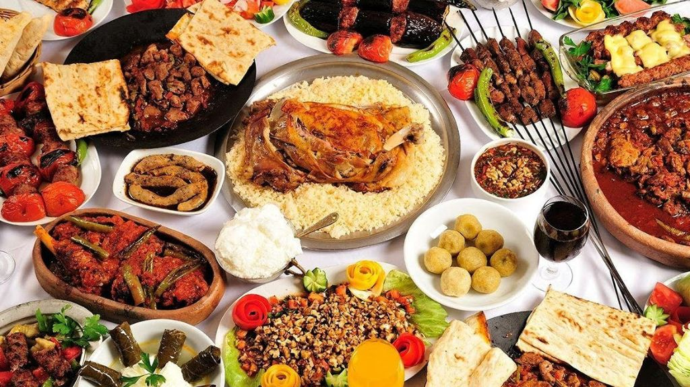
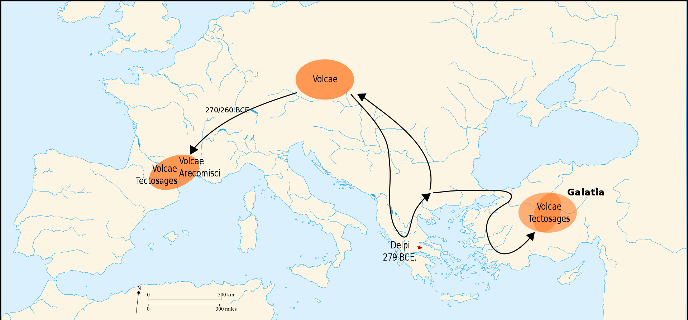
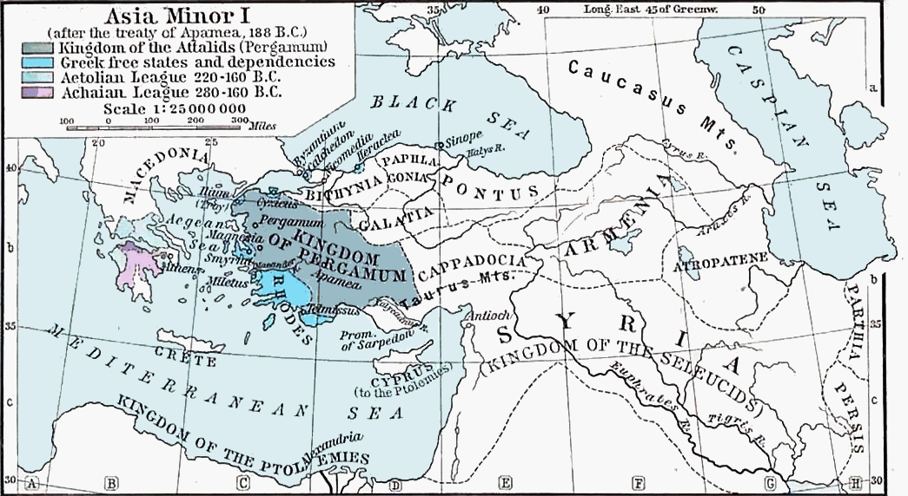
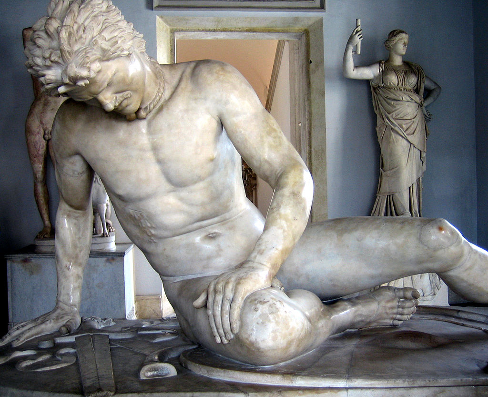

안디옥은 어디인가 - 십자군, 로마군, 갈리아인과 사도 바울의 이야기
게시: 2021-02-04T06:30:05+09:00
최근에 광주 안디옥교회에서 코로나 집단 감염이 일어났고 그 과정에서 또 다시 집단 감염의 취약성에도 불구하고 대면 예배를 고집하는 한국 개신교단에 대한 맹비난이 있었습니다. 오늘 글은 그런 비난에 대한 것은 아니고 그냥 안디옥이라는 곳이 뭐하는 곳이길래 이렇게 교회에 안디옥이라는 이름이 많은가에 대한 글입니다. 일단 안디옥은 정말 많이 쓰이는 이름입니다. 성경에 나오는 안디옥은 안티오크(Antioch) 또는 안티오키아(Antiochia)를 말하는 것으로서, 유명 게임 스타크래프트에도 프로토스 종족의 고향별 아이우르(Aiur)의 지방명으로 등장하는 이름이기도 합니다. 안티오키아(Antiochia)는 알렉산드로스 대왕의 사후 그의 제국을 나눠가진 부하 장군들 중 셀레우코스(Seleukos)가 세운 도시들의 이름으로서 안티오쿠스(Antiochus)의 도시라는 뜻입니다. 셀레우코스의 아버지와 아들의 이름이 모두 안티오쿠스였거든요. 셀레우코스 왕조는 알렉산드로스 제국 중 가장 넓은 시리아(오늘날 시리아-이라크-이란) 지방을 차지했는데, 이 넓은 지역에 건설된 안티오키아라는 이름의 도시가 약 18개 정도 됩니다. 그 중에서 역사적으로 가장 유명한 안티오크는 오늘날 터키 남부, 시리아-레바논 해안 지역에 있는 항구 도시이고 십자군 전쟁 시대 십자군의 주요 거점이었습니다. 특히 1098년 십자군이 포위 공격으로 안티오크를 점령한 것이 유명합니다.

(제1차 십자군은 1097년 10월부터 1098년 6월까지 8개월 넘는 포위 끝에 안티오크를 점령합니다. 이로써 십자군이 팔레스티나에 발판을 갖게 되지요.)

(이 유명한 안티오크는 오늘날 터키 남부의 안타키아입니다.)

(저같은 40~50대 사람들에게 안티오크는 프로토스의 별 아이우르의 지방명입니다.) 그런데 보통 교회 이름에 붙이는 안티오크라는 이름은 아마도 사도행전 13장에 나오는 비시디아 안디옥일 것입니다. 이는 Antioch in Pisidia를 말하는 것으로서, 오늘날 터키 아나톨리아 반도의 남쪽에 있는 내륙 도시입니다. 성서에 비시디아로 나온 Pisidia는 오늘날 터키어로도 피시디아라고 불리는 고지대 지방인데, 이 곳의 기후는 비교적 건조하여 삼림은 없지만 타우러스(Taurus) 산맥에서 흘러내리는 냇물과 비옥한 토양, 온화한 날씨 덕분에 각종 곡물과 과일 등이 풍족하게 자라는 지방입니다. 그렇게 살기 좋은 곳이니 안티오키아라는 도시를 따로 건설했던 것이겠지요. 다른 유명한 안티오크를 놔두고 교회들이 이 안티오크를 중요시하는 이유는 사도 바울의 주요 전도지 중에 이 곳이 있기 때문이고, 다음과 같이 사도행전 13장에서도 매우 중요한 곳으로 나옵니다. 13:14 그들은 버가에서 더 나아가 비시디아 안디옥으로 갔습니다. 그리고 안식일이 돼 회당에 들어가 앉았습니다. 13:14 From Perga they went on to Pisidian Antioch. On the Sabbath they entered the synagogue and sat down.

(바울과 바나바가 전도한 비시디아 안디옥의 유적입니다.) 여기서 보시다시피 이스라엘에서 꽤 멀리 떨어진 아나톨리아 반도 한복판의 비시디아 안티오크에는 당시에 이미 유대인 회당(synagogue)이 있을 정도로 유대인들이 꽤 많이 살고 있었습니다. 그리고 특히 우리 교회 목사님 설교에 따르면 이때 바울과 바나바가 비시디아 안디옥에서 설교를 들은 사람이 근 10만에 달했다고 합니다. 19세기 초 유럽 최고의 도시라던 파리도 인구가 60만이었고, 베를린은 20만, 모스크바도 27만 정도였습니다. 그런데 AD 1세기 경에, 아무리 비옥한 곳이라고 해도 대도시가 아닌 지역에 10만의 사람이 모인다? 믿기 어려운 이야기였습니다. 찾아보니, 얼마나 정확한 자료인지는 모르겠으나, 정말 당시 비시디아 안디옥과 그 주변 지방의 인구가 대략 10만 정도 되었다고 하네요. 아마 목사님이 10만이라고 말한 것은 안티오크 시내의 인구라기보다는, 그 지방 전체의 인구가 10만이라는 소리였던 것 같습니다. 그 10만의 주민들은 성서에서는 그냥 이방인(gentiles)라고 표기되어 있는데, 다양한 사람들이 살던 유서깊은 지역인 만큼 프리기아인(Phrygian), 갈라티아인(Galatian), 그리스인, 유대인, 그리고 로마군에서 만기전역한 제대군인 등이 뒤섞여 있었습니다. 그만큼 아나톨리아 지방이 살기 좋고 비옥한 곳이었다는 반증이겠지요.

(비시디아 안티오크의 위치입니다.)

(중앙아시아에서 출발한 투르크족이 온 대륙을 휩쓸고 다니다가 여기에 정착한 것이 다 이유가 있습니다. 워낙 비옥한 땅이거든요. 덕분에 오늘날 터키는 맛있는 요리로 유명합니다.) 여기서 잠깐, 갈라티아인이라고요? 유럽에는 갈라티아(Galatia) 혹은 갈리시아(Galicia)라고 불리는 지방이 꽤 여러 곳 있습니다. 나폴레옹 전쟁 당시 무어 경의 영국군 원정대가 극적인 탈출을 했던 스페인 북서부 코루냐 항구가 있던 지역이 갈리시아였고, 또 당시 폴란드와 우크라이나 사이의 지역도 똑같은 갈리시아라고 불렸습니다. 바울이 남긴 신약 성서 갈라디아서도 영어 명칭은 Epistle to the Galatians으로서 갈라티아안들에게 보내는 서간문이라는 뜻인데, 이 갈라티아는 비시디아 안디옥 바로 북쪽에 있는, 아나톨리아 반도의 정중앙에 위치한 내륙 지방입니다. 그리고 짐작들 하시듯이 이 지명들은 모두 갈리아(Galia, Galii, Gaul), 즉 알프스 산맥 북쪽 너머 오늘날 프랑스 지역에 살던 갈리아인들로부터 나온 지명들입니다. 대체 갈리아인들은 유럽을 얼마나 휘젓고 다녔기에 이렇게 유럽 대륙 서쪽 끝부터 동쪽 끝, 그리고 아시아 대륙까지 그 이름을 남긴 것일까요 ? 스페인이나 우크라이나 쪽은 일단 넘어가고, 오늘날 터키 수도인 앙카라가 위치한 지방에 갈라티아란 이름이 붙게 된 이유는 로마의 역사가인 리비우스(Livius)가 남긴 역사책에 꽤 소상하게 나와 있습니다. 요약하면, 당시 이탈리아 북쪽 일대에 살던 켈트/갈리아족이 대이동을 시작하는데, 일부는 서쪽으로도 갔으나 일부는 그리스 쪽으로 이동하여 BC 297에 델포이 신전을 약탈하기도 합니다. 그 중에서 또 일부는 본대와 갈라져서 오늘날 이스탄불 일대까지 진출했는데, 결국 유럽과 아시아의 경계인 보스포러스 해협까지 도달합니다. 리비우스에 따르면 이들은 띠처럼 얇은 바다만 건너면 도달할 수 있는 저 너머의 땅의 비옥함과, 또 거기 사는 민족들이 다 고만고만한 약체라는 말을 듣고 그 욕망을 주체할 수가 없어서 결국 배를 구해 바다를 건넜습니다. 이들은 가는 곳마다 승승장구하며 약탈을 했고, 결국 당시 아나톨리아 반도 거의 한복판인 지역에 터줏대감으로 자리를 잡고 앉았습니다. 그들 덕분에 그 일대 지방명이 아예 갈라티아(Galatia), 즉 갈리아인들의 땅이라고 붙여진 것입니다. 스페인 북서쪽 끝도 비슷한 이유로 로마인들이 Gallaeci라고 부르던 갈리아 일족이 살던 곳이라서 갈리시아가 된 것입니다.

(게르만족 이전에는 갈리아인들이 유럽을 휘젖고 돌아다녔습니다. 물론 이는 그리스-로마인들, 그러니까 지중해 세력의 입장에서 본 것이지요.)
(서신을 쓰고 있는 바울입니다. 성서가 한글자 한글자 하나님께서 직접 내리신 영원불멸의 말씀이며 모든 단어와 문장을 그대로 받아들여야 한다는 성서무오론자들에게는 하나님께서 바울을 통해 말씀을 양피지에 적고 계시는 기적의 현장입니다. 서기 1세기의 시대상과 가치관을 반영할 수 밖에 없는 바울 개인의 사상과 입장은 전혀 반영되지 않은, 하나님의 말씀 그대로라고 주장하지요. 그러나 그런 분들이야말로 바울이 지은 로마서 13장에 '모든 권세는 하나님이 내리신 것이므로 기독교인은 세상 권세에 복종해야 한다'라는 구절은 MB+503 시절에는 진리로 받아들이다가 진보정권 시절에는 애써 외면하는 경향이 있습니다.) 아시다시피 바울의 서신들(Epistle)은 대부분 신약성서로 편입되었습니다. 그 중 하나가 갈라디아서(Epistle to the Galatians)이지요. 이 편지들은 바울이 그렇게 아나톨리아에 자리잡은 갈리아인들에게 보내는 편지일까요? 실제로는 물론 갈라디아서는 갈리아인들에게 보내는 편지는 아니고 그들이 자리잡았던 갈라티아 지방 사람들 중 기독교로 개종한 유대인과 이방인(gentiles, 즉 대개의 경우 그리스인)들에게 보낸 편지입니다. 생각해보면 갈리아인들이 아나톨리아에 자리잡은 것은 바울 시대보다 고작 3백년 정도가 앞섰을 뿐이니 3백년 사이에 갈리아인들이 정체성을 완전히 잊었을 것 같지는 않은데요. 그들은 그 지방에 이름만 남기고 다들 어디로 사라졌을까요 ? 리비우스가 남긴 역사책에서 대략 그들의 후일담을 찾을 수 있습니다.

(기원전 188년 소아시아의 상황도입니다. 당시의 시리아 왕국은 오늘날 시리아와는 개념이 많이 다른데, 저 일대의 대부분은 알렉산드로스 대왕 때부터 이어진 마케도니아 계통의 왕조들이 다스리고 있었습니다.)
기원전 189년, 당시 로마는 소아시아 지방에 진출하여 알렉산드로스 대왕의 후예인 마케도니아 계통의 셀레우코스 왕조와 싸우고 있었습니다. 여기에도 로마의 동맹국이 있었는데 역시 마케도니아 계통이라고 할 수 있는 페르가뭄(Pergamum) 왕국이었습니다. 그런데 페르가뭄 왕국은 그 전부터 바로 이웃에 인접한 갈라티아의 갈리아족과 분쟁을 겪고 있었습니다. 이때 셀레우코스 왕조와의 휴전을 마무리 짓고 있던 신임 집정관 만리우스(Gnaeus Manlius Vulso)가 로마군을 이끌고 갈리티아를 공격하여 결국 갈리아인들을 패배시키고 로마와 페르가뭄 왕국에게 복속시킵니다.

(죽어가는 갈리아인. 헬레니즘 시대의 그리스 조각상입니다.)
이때 만리우스가 로마군 병사들에게 갈라티아 원정을 독려하며 한 연설에서 인상적인 부분이 나옵니다. 그는 병사들에게 대충 이런 내용의 연설을 합니다. "상대가 갈리아인들이라고 두려워할 것 없다. 이 소아시아에서는 갈리아인들이 무적의 부족이라고 공포의 대상이지만 우리 로마인들에게는 그들을 여러번 격퇴한 경험이 있다. 게다가 지금 너희들이 싸우게 될 갈리아인들은 제대로 된 갈리아인도 아니다. 우리 선조들이 싸웠던 갈리아인들은 알프스를 넘어온 진짜 야만족이었지만, 우리 앞의 갈리아인들은 이미 백년 넘게 이 온화하고 비옥한 아나톨리아에서 나약한 소아시아인들과 투닥거리며 약화된 자들로서 이름만 갈리아인일 뿐이다. 원래 살던 곳에서 벗어난 종자들은 원래의 그 성질을 잃어버리게 마련이고 저 갈리아인들은 이 일대의 프리기아 사람들과 다를 것이 별로 없다." 실제로 세월에 당할 장사 없습니다. 그건 개인도 그렇지만 민족이나 나라도 마찬가지입니다. 고대에 지중해와 유럽, 중동 지방까지 정복했던 마케도니아와 로마인들이 오늘날 어떻게 되었는지 보십시요. 뿐만 아니라 종교도 그렇습니다. 예수님께서 사랑을 가르치셨던 기독교가 오늘날 어떻게 변질되었는지 보면 무척 마음이 아픕니다. 특히 한국에서는 토착 샤머니즘과 결합하여 정말 희한한 목사님 컬트가 된 것 같아 씁쓸합니다.
Source : Rome and the Mediterranean by Livy
en.wikipedia.org/wiki/Antioch_of_Pisidia
drivethruhistoryadventures.com/paul-and-barnabas-at-pisidian-antioch/
en.wikipedia.org/wiki/Epistle_to_the_Galatians
en.wikipedia.org/wiki/Siege_of_Antioch
en.wikipedia.org/wiki/Galatian_War